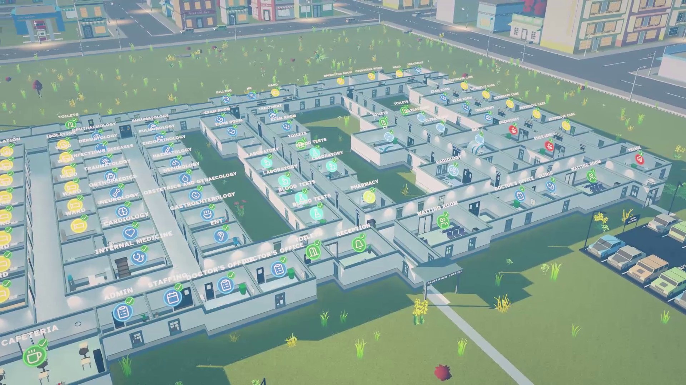
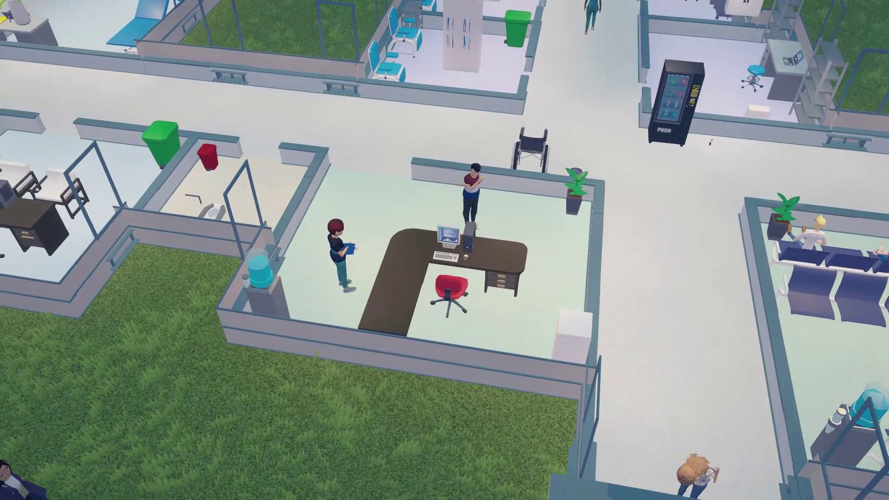
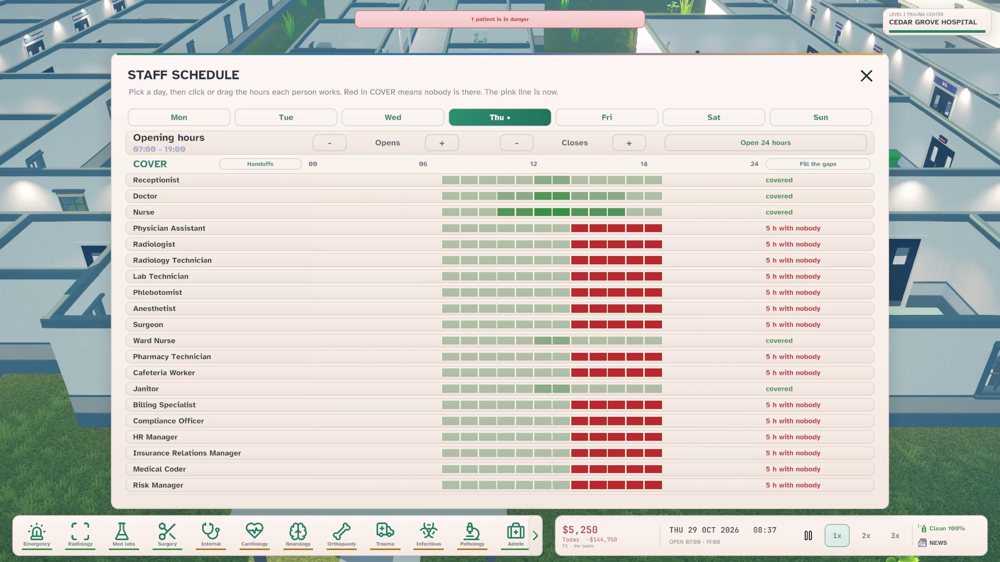
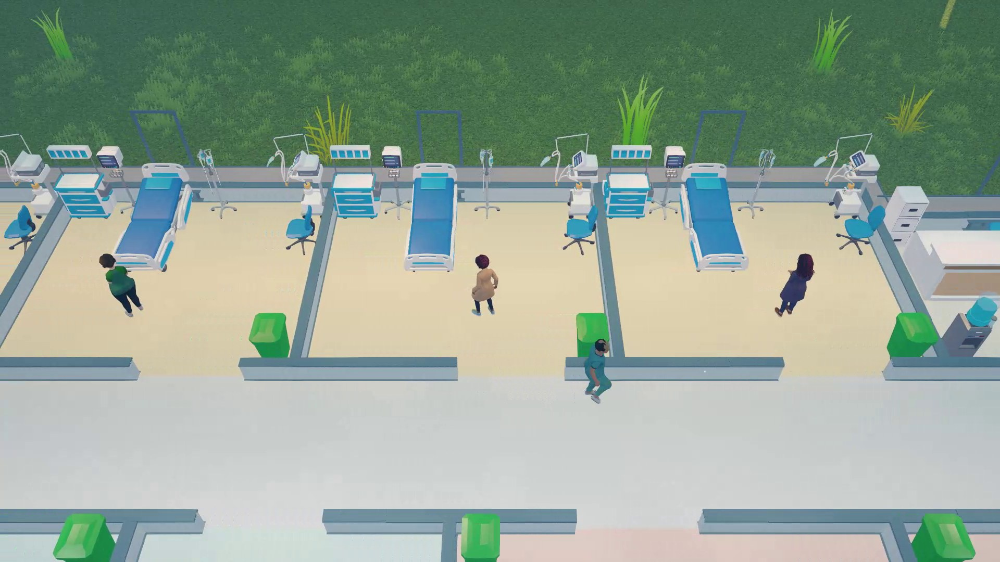

Make a place that works.
Draw rooms and floors, place equipment, connect storeys with lifts, build paths and parking, or begin with a staffed, ready hospital.
STEAM PLAYTEST ALPHA · ACTIVE DEVELOPMENT
Design and run a living hospital from above. Then walk its corridors in first person, examine patients, read their charts and make the call yourself.
Alpha access is through Steam Playtest. Join the Discord to apply as a tester.

THE GAME TODAY
VitalCore Hospital combines the builder, the administrator and the doctor in the same playable hospital. These are systems present in the alpha, with balancing and polish still in progress.
Draw rooms and floors, place equipment, connect storeys with lifts, build paths and parking, or begin with a staffed, ready hospital.
Hire and schedule staff, manage beds and supplies, watch patient flow and finances, and respond when cases turn urgent.
Walk in first person, interview and examine patients with clinical tools, order tests, read results, diagnose and decide on treatment.
Patients and staff come from a connected city with homes, cars, bus routes, a day and night cycle, weather and changing seasons. The gallery below shows the hospital floor, patient areas and staff coverage.
IN-GAME MEDIA / OCTOBER 29, 2026
Fresh captures from the current development build: the hospital floor, reception, staff coverage and intensive care. This is work in progress; development footage may include changes beyond the live Steam Playtest.



Captured in game · October 29, 2026 · Work in progress · Gameplay footage, not concept art.
CURRENT STEAM PLAYTEST BUILD
Build 26200323 was published October 25. This update targets large-hospital performance, urgent-patient alerts, staff schedules, bug-report housekeeping, and visual and vehicle fixes. The October 29 gallery above shows a newer development build, rather than footage of this specific release.
Optimizations to floor tints, reflections, scenery, door signs and build mode improve large-hospital frame rates. The developer's tower test rose from about 27 FPS to over 60 FPS at 2560 × 1440; results will vary by PC and save.
Click the red alert ribbon to jump to a critical patient and open their chart. Staff schedules now span the full week, show actual hours, and include a “Fill the gaps” button.
Ambulances target the ER doors, stretchers carry a lengthwise patient on a gurney, and floor views hide the storeys above. First-person shading artifacts were removed, and F8 reports now clean up uploaded desktop zips.
DEVELOPMENT ROADMAP
This is the current direction, not a promise of release dates. The December 2026 target in the project roadmap is a focused, polished demo slice, not the complete hospital simulation.
Work through reports, improve the chart’s exam and interview pages, and make completed lab and imaging results easier to notice.
Hand-play inpatient beds and doctor rounds, tighten the morgue kit, improve build feedback and check longer sessions across different hospitals.
A small clinic, patient admissions and visible staff work in a guided twenty to thirty minute scenario. The project roadmap targets December 2026 for this demo.
Additional specialties, maternity, disease outbreaks and deeper hospital systems are planned beyond the current alpha. Scope and timing may change.
NOW ON PATREON
Follow the journey for free, or support development with monthly updates and a closer look behind the care desk.
Public development updates and announcements. A welcome post is ready for your first visit.
A monthly supporter development update and discussion on supporter posts.
Supporter benefits plus a monthly behind-the-scenes post with work-in-progress screenshots and design notes, and occasional feedback polls.
Membership is optional development support. It does not include a game key or guaranteed Steam Playtest access. Apply for testing through Discord.
HELP SHAPE THE HOSPITAL
Wishlist the game, apply for the Steam Playtest through Discord, and send feedback or F8 bug reports as the alpha grows.